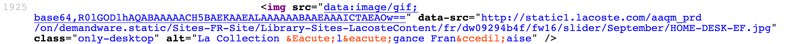
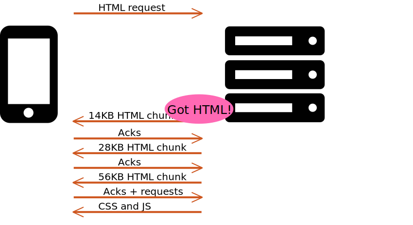
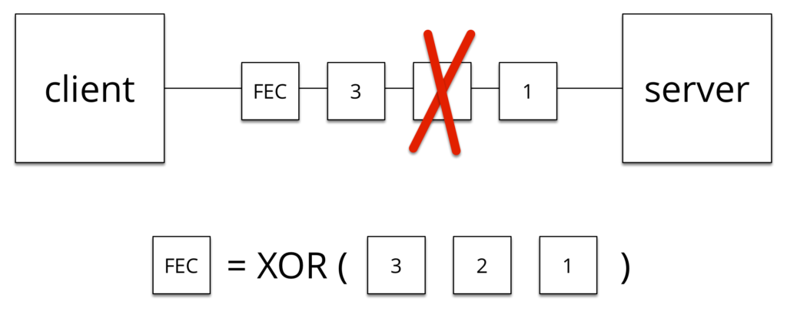
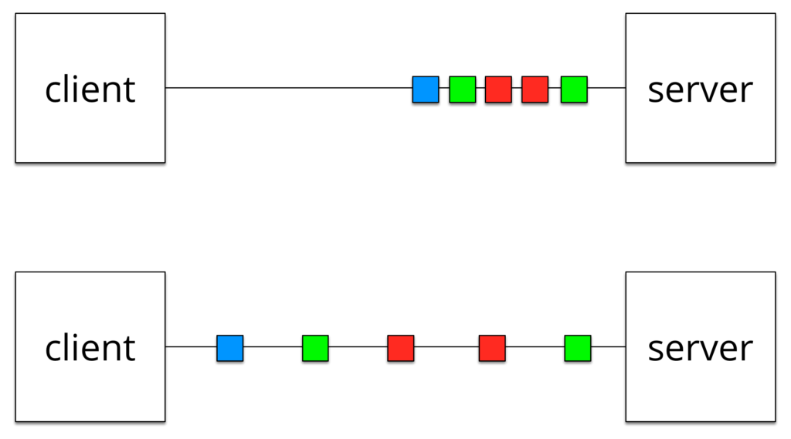
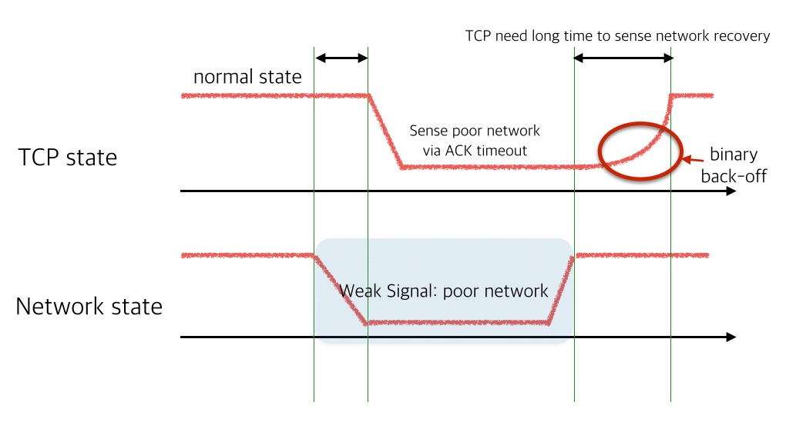
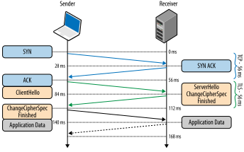
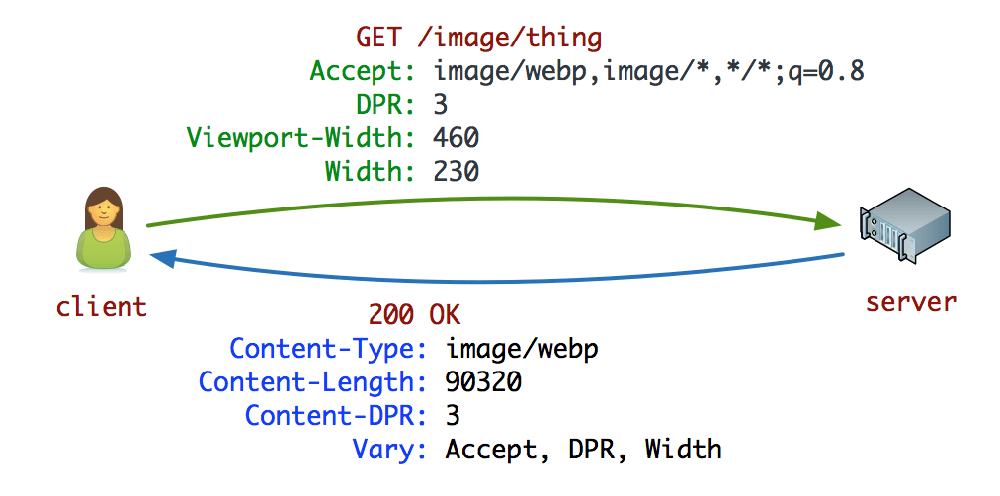
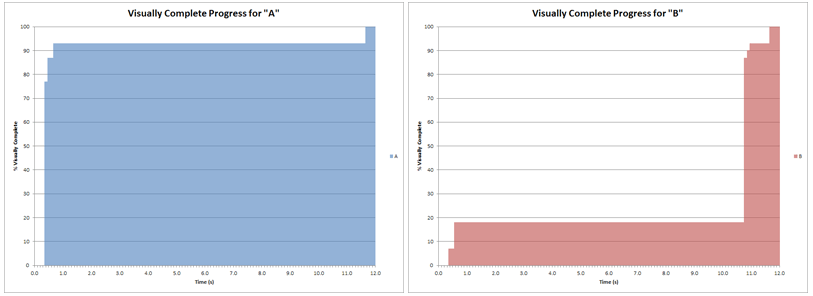
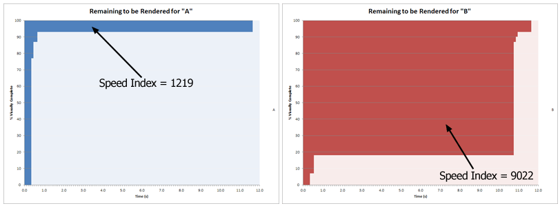
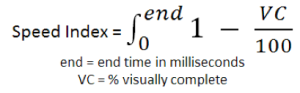

Webperf 2.0
Aller plus loin que les règles classiques
PerfUG Novembre 2016
@stefounet
Petite
introduction
(pour ceux qui vivraient encore dans des datacenters)
Performance perçue : afficher quelque chose d'utile le plus rapidement possible
backend/frontend


Les limites des règles actuelles
quand la webperf va à l'encontre de la webperf

- Make Fewer HTTP Requests
- Use a Content Delivery Network
- Add an Expires Header
- Gzip Components
- Put Stylesheets at the Top
- Put Scripts at the Bottom
- Avoid CSS Expressions
- Make JavaScript and CSS External
- Reduce DNS Lookups
- Minify JavaScript
- Avoid Redirects
- Remove Duplicate Scripts
- Configure ETags
- Make AJAX Cacheable

- Ajax
- Responsive Web
- Split initial payload
- Defer JS (non blocking, async)
- Inline scripts position
- Minify HTML
- Optimize images
- Sharding
- Flush the document early
- Use iFrame sparingly
- Simplify CSS selectors
- latence
- TCP (handshake, slow start)
- limites des navigateurs
- HTTP1.1
- im-mobile
mais en fait, aujourd'hui
- les navigateurs ont évolué en 10 ans (Firefox 49, Chrome 53, Edge)
- les terminaux ont changé
- les protocoles sont en train de changer (SPDY/HTTP2)
- même les couches réseaux sont remises en cause (QUIC)
- la manière de coder des sites a changé : SPA, RWD
- les widgets ont explosé à cause des tags managers
Mobile-First


40% MOBILE / TABLETTE
75% MOBILE / TABLETTE

Mobile - Only


 46% des consommateurs disent qu’attendre des pages qui se chargent est ce qu’il détestent le plus quand il surfent sur mobile
46% des consommateurs disent qu’attendre des pages qui se chargent est ce qu’il détestent le plus quand il surfent sur mobile


Bien 15% disent que ça arrive « fréquemment » !

Preloader / speculative parser / Lookahead downloader
Attention à ne pas masquer les objets (ou le contraire) Les règles actuelles
Concatenation
JS / CSS, Images
- un seul gros fichier peut ralentir la page
Concatenation
JS / CSS, Images
- un seul gros fichier peut ralentir la page
- limites d'IE9
- impossible d'établir une priorité dans le code téléchargé
- ça casse le cache (et le flush est plus contraignant)
- maintenabilité
Concatenation
JS / CSS, Images
Trouver un intermédiaire en fonction de la taille et de la composition du site.
Et aussi avoir un bon process de build
Sharding / Cookieless domain
- introduit de nouvelles résolutions DNS, en général dans le
<head> - "low" vs high latency network
Vaut mieux éviter, surtout pour les ressources bloquantes
Lazyloading
- Lazyloader les premières images est une mauvaise idée !
- A réserver aux images en dessous de la ligne de flottaison
JS at the bottom

Minification
- gain minime
- sauf si on minifie de façon agressive
- mais peu de personnes le font parce que ça peut être dangereux
et si on allait plus loin ?
cache cache
et pour commencer si on faisait plus de cache ?Cookieless cache
Cacher les pages dynamiques pour les nouveaux utilisateurs ou les utilisateurs anonymes
ESI/Ajax
Cacher les pages HTML et ajouter les parties dynamiques en Ajax
Chargement progressif
Techniques de (petit) sioux
- JS async/defer/iframe
- Lazyloading image/iframe

Techniques de (grand) sioux
- Async font loading
- Chargement des fonts via loadCSS + preload
- Application quand les fonts sont disponibles (font event / polyfill fontFaceObserver)
- tradeoff (FOUT, FOIT, FOFT vs maintenance)
Techniques de (grand) sioux
- Inline critical CSS/JS + async loading
- Séparer ce qui est critique pour le rendu ATF
- Inliner ce qui est critique
- Charger le reste en asynchrone
- Charger la totale ensuite pour remplir le cache
- Inline first view
Prévoir la gestion du cache vs inline (cookie ou localStorage)
Mobile-first => Mobile-only => Offline-first
Pré-
plusieurs types
preconnect, prefetch, prerender, preload, dns-prefetch
- pas supporté par tous

- accessible en <link> ou en header HTTP Link:


- certaines fois accessible via JS
HTTP2 est arrrrivééé
"we’re not replacing all of HTTP — the methods, status codes, and most of the headers you use today will be the same. Instead, we’re re-defining how it gets used “on the wire” so it’s more efficient, and so that it is more gentle to the Internet itself ...." — @mnot


- New binary framing
- One connection (session)
- Many parallel requests (streams)
- Header compression
- Stream prioritization
- Server push
Impact sur le waterfall

Impacts sur les règles
- suppression de la concaténation
- démarrage du parsing et de l'exécution plus tôt
- optimisation du cache entre les pages
- suppression/limitation du sharding
- limite le nb de résolutions DNS
- limite le slow start des nouvelles connexions
Server Push
- implémentations limitées (h2o, nghttp2, apache, nginx)
- utilise
Link: rel="preload" - attention au cache
- attention à la bande passante disponible
- attention à l'ordre
- attention au domaine

Server Push
Server Push
QUIC
Quick UDP-based Internet Connections


QUIC
- UDP = perte de paquets
- FEC (Forward Erroc Correction)
 - Packet Pacing

- FEC (Forward Erroc Correction)
QUIC
- multiplexing
QUIC
- Particulièrement important en mobile 
- Connection ID
QUIC

Service workers
- Sorte de proxy in-page
- Repose sur la nouvelle API Fetch et les Promises
- Arrive sur les navigateurs doucement

- Contraintes : HTTPS-only & CORS
- Usage : gestion fine du cache, offline, timeout, redirects, inspection, modification, prefetch
Timeout sync scripts
- Certains scripts sont bloquants (A/B test)
- Possibilité de les timeboxer (<250ms)
- Prévus par certains fournisseurs (Kameleoon, Optimizely)
- Autre solution : Promise.race()

Optimisations TLS
- TLS False Start
 - Session Resume
- OCSP Stapling

- TLS1.2 (1.3) + Forward Secrecy
Et les images ?

Nouveaux formats
JPG 2000, JPG-XR, WebP

WTF ???
JPG
- MozJPEG
- Compression avancée
- Meilleure qualité sur les dessins et les images Retina
PNG

JPG standard 1
JPG standard 2
MozJPEG
JPG "intelligent"
- DSSIM
- Trouve la meilleure qualité JPG en comparant à l'original
- cjpeg-dssim = jpegoptim + mozjpeg + dssim
GIF
Un seul outil : LossyGif (fork de GifSicle)- Possibilité de les transformer en PNG s'ils ne sont pas animés
- Possibilité de les optimiser fortement sinon
Client Hints
- Prendre en compte le vrai contexte
- Moins de code pour les images responsive
Client Hints

Client Hints

Client Hints
AMP
- Accelerated Mobile Pages
- Composants HTML sous forte contrainte webperf
- D'abord pour les sites de contenu et premières initiatives pour les sites ecommerce
- Pages AMP mises en avant dans les SERP
Nouvelles métriques
Le load time c'est mort


- Speed Index
- Start Render
- Disponible en RUM !
Speed Index
Speed Index
Speed Index
Conclusion
ce qui est toujours d'actualité
- compression des pages : gzip, images
- cache (expires, etags si bien configuré)
- CDN
- CSS on top / deferJS
ce qui est à mettre en place
- chargement progressif (voire offline)
- asynchrone
- avec le moins de requetes DNS possible
- et avec un budget webperf
A prévoir
- suppression sharding
- quasi suppression concaténation
- critical push / inlining / preload
- priorisation des éléments ATF
- in-page perf (rendering, layout, JS, requestAnimationFrame, web workers, memory)
- backend
- outils de mesure, resources timing, navigation timing
- TLS (session reuse, cache, tls record, certificate size)
- TCP (slow start, tcp window scaling, disable slow start after idle)
- WebRTC
- Impact third parties
- AMP
- Content Performance Policy
Sources / Links
- MozJPEG 3.0
- HTTPArchive Trends
- Prioritize loading of background images
- Async vs Defer
- Async ad loading iframes
- Script loading patterns
- Font loading
- Compressive image
- LossyGif
- Critical CSS generator
- Critical CSS bookmarklet
- Preload
- Async CSS loader
<link>in<body>(hack)- Doubleclick Study (sept 2016)